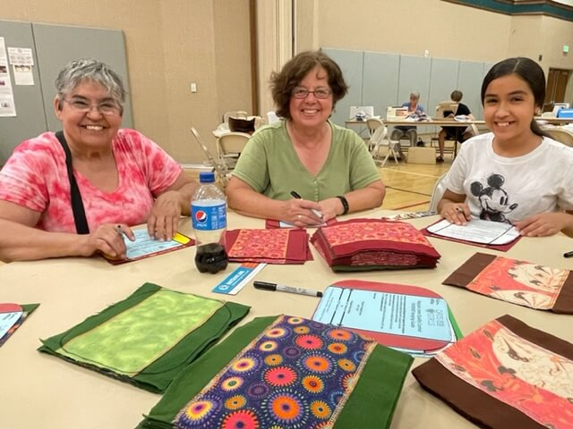
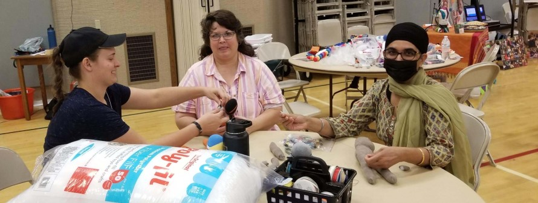
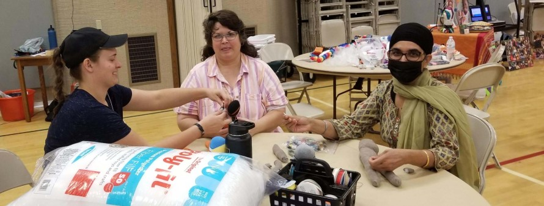

WEMM - working with the community to do good
Our WEMM community loves to combine our efforts to do more good. Whether we're putting together Christmas food baskets, supporting local non-profits through the 3rd Thursday Humanitarian Day, collecting needed supplies for those in need, or doing projects to support and beautify Woodland, you're invited to join us.

Christmas Baskets
Each year, WEMM puts together about 300 Christmas baskets with turkeys, potatoes, gravy, canned vegetables, stuffing, jello, and more to serve needy families, primarily through Fourth & Hope.
3rd Thursday Humanitarian Day
WEMM is a major sponsor of the 3rd Thursday Humanitarian Day, held the 3rd Thursday of each month at the church on the corner of Pioneer and Gum.
The whole community is invited! Come for whatever time you have available between the hours of 1-9 p.m. and help with a variety of humanitarian projects that benefit those in need in our community, our county, and beyond. More info on JustServe.org.
Here are some of the things we've done or are working on:
* Wrapping diapers for the Yolo Diaper Bank (over 30,000 so far)
* Packing lunches for Empower Yolo
* Assembled bathroom kits for the 61 new tiny homes at Fourth & Hope
* Assembled bathrooms-to-go and kitchens-to-go for Empower Yolo
* Tracing, cutting, sewing, and serging liners (800+ so far) and pouches (250+ so far) for Days for Girls (reuseable feminine hygiene)
* Conflict resolution seminar presented by the Yolo Conflict Resolution Center
* Sewing and filling comfort bags for foster children complete with toiletry bags and sock monkeys
* Food boxes for refugees
* Crocheting and knitting blankets for those without a home
* Rock-a-Smile
 
